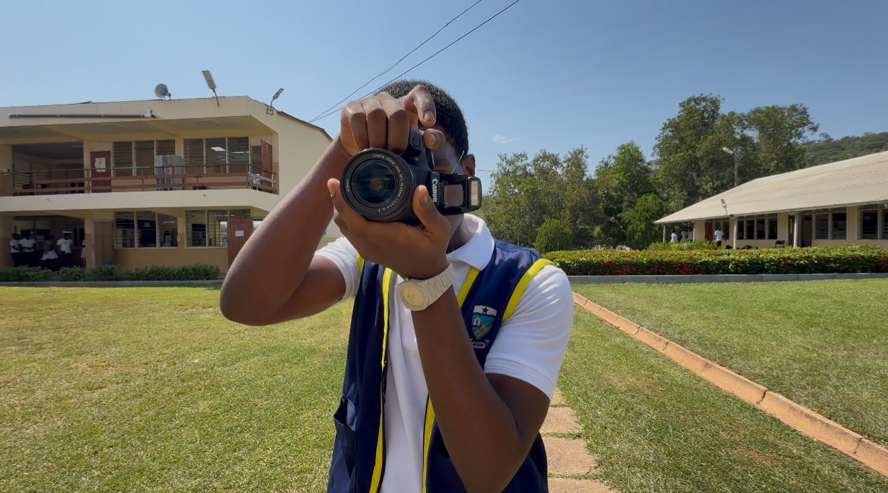

Welcome to our quick tutorial on using a camera! Whether you're using a DSLR, a smartphone, or a point-and-shoot, these basic tips will help you get started on taking amazing photos.
1. Setting Up Your Camera

- Charge your battery: Make sure your camera is ready to go with a full charge.
- Insert the memory card: Don’t forget to insert a compatible memory card to save your photos!
- Choose your shooting mode: Set your camera to the mode that best suits your shoot, like Auto or Manual.
2. Photography Tips
- Lighting: Natural light is your friend! Try to shoot in well-lit areas or during golden hour for the best results.
- Stabilize the camera: Keep your hands steady or use a tripod to prevent blurry photos.
- Focus: Make sure your subject is in focus, especially if you’re using manual focus on a DSLR.